關西 9 天行程
Hub 1 京都 ×4 晚 市區不租車，搭地鐵
花見小路
祇園最具代表性的石板街道，兩側是傳統茶屋與町家，保留京都花街風情；傍晚偶爾能遇見前往座敷的藝妓、舞妓（請勿追拍）。
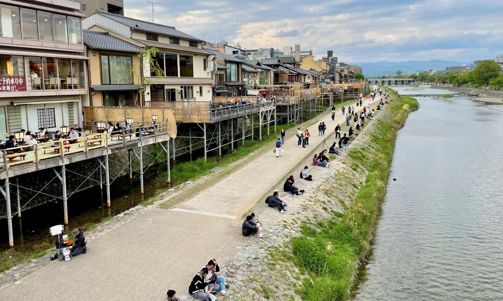
鴨川
貫穿京都市區的母親之河，河岸是市民散步、情侶等距而坐的日常風景；夏季四条一帶的「納涼床」餐廳沿河搭起，別具風情。
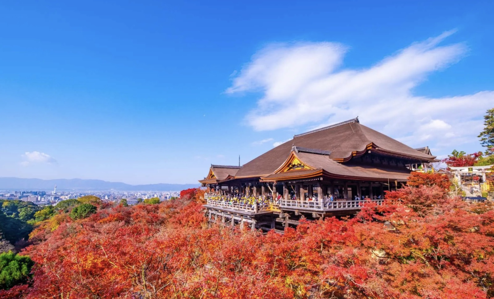
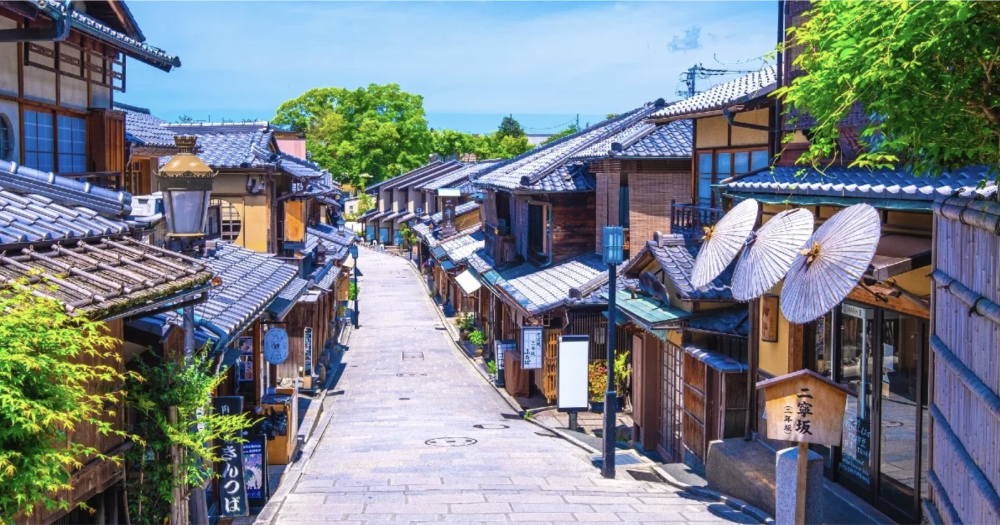
清水寺
京都最古老的寺院之一、世界遺產。「清水舞台」以懸空木造工法建於崖上，可俯瞰京都市景與楓紅。
二年坂・三年坂
通往清水寺的石坂古道，兩旁老町家、茶屋與伴手禮店林立，是體驗京都風情的必走路段。
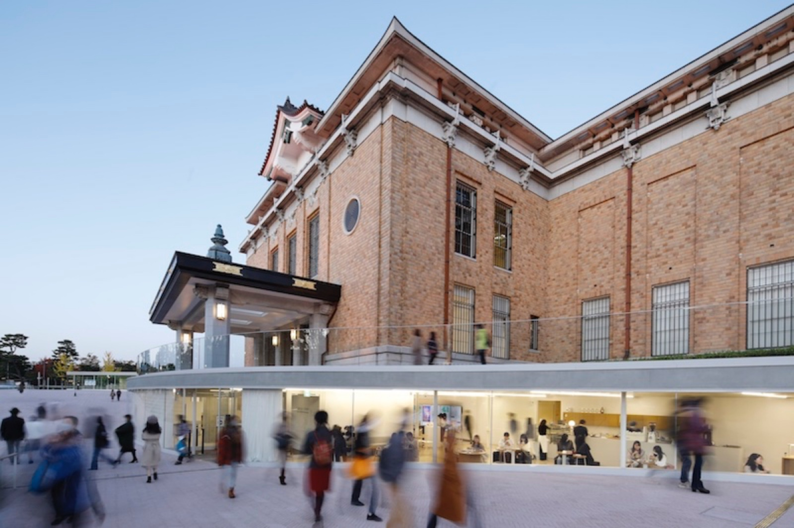
京都市京瓷美術館
京都最古老的公立美術館，經建築師青木淳、西澤徹夫改修，保留昭和年代外觀並新增玻璃帷幕入口；館前岡崎公園開闊，適合散步歇腳。
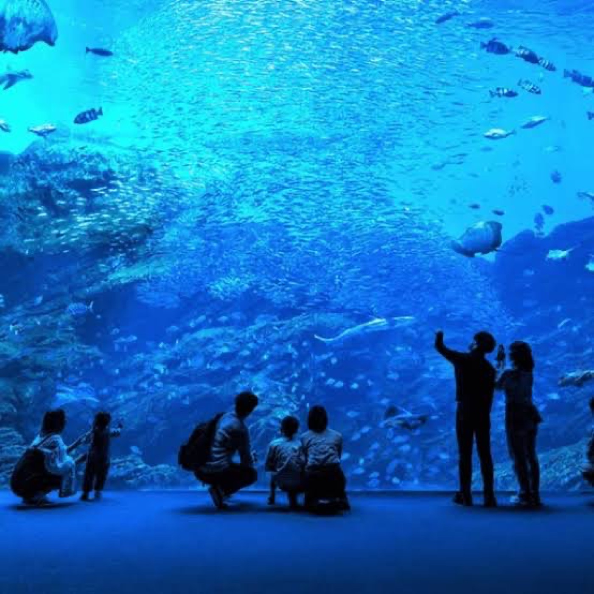
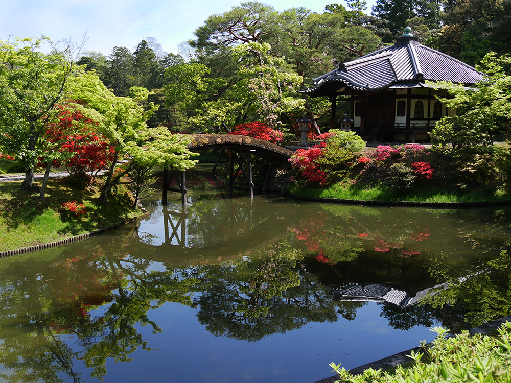
京都水族館
位於梅小路公園內的內陸型水族館，以人工海水飼育；有大水槽、海豹海豚與京都特有的山椒魚，適合親子。
桂離宮
江戶初期皇室別墅，池泉回遊式庭園的代表作，被譽為日本庭園美學的巔峰；採預約導覽制。
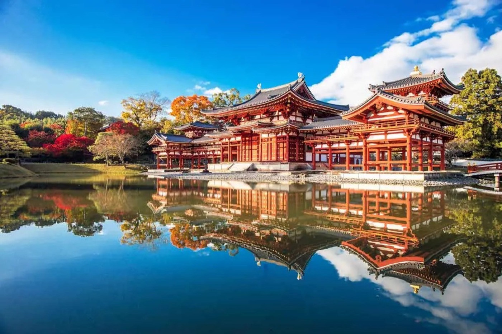
平等院・鳳凰堂
世界遺產，日幣十圓硬幣上的鳳凰堂即在此。臨池而建的阿彌陀堂倒映水面，是平安時代淨土信仰與建築美學的極致代表。
宇治茶舖
宇治是抹茶名產地，平等院表參道與宇治橋畔老茶舖林立，抹茶甜點、生茶凍、抹茶百匯與抹茶蕎麥麵等各具特色，也有臨川品茶配糰子的百年茶屋，皆可內用。用餐時段常需候位。
Hub 2 琵琶湖 ×4 晚 環湖自駕往返，據點近江舞子
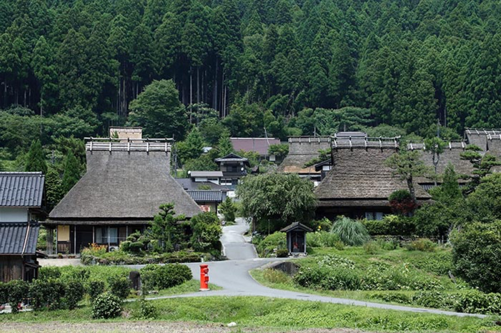
美山町茅葺之里
京都近郊山村，保存數十棟茅葺（かやぶき）合掌屋，列為重要傳統建造物群保存地區，四季景色宜人，是京都往琵琶湖途中順遊的好地方。
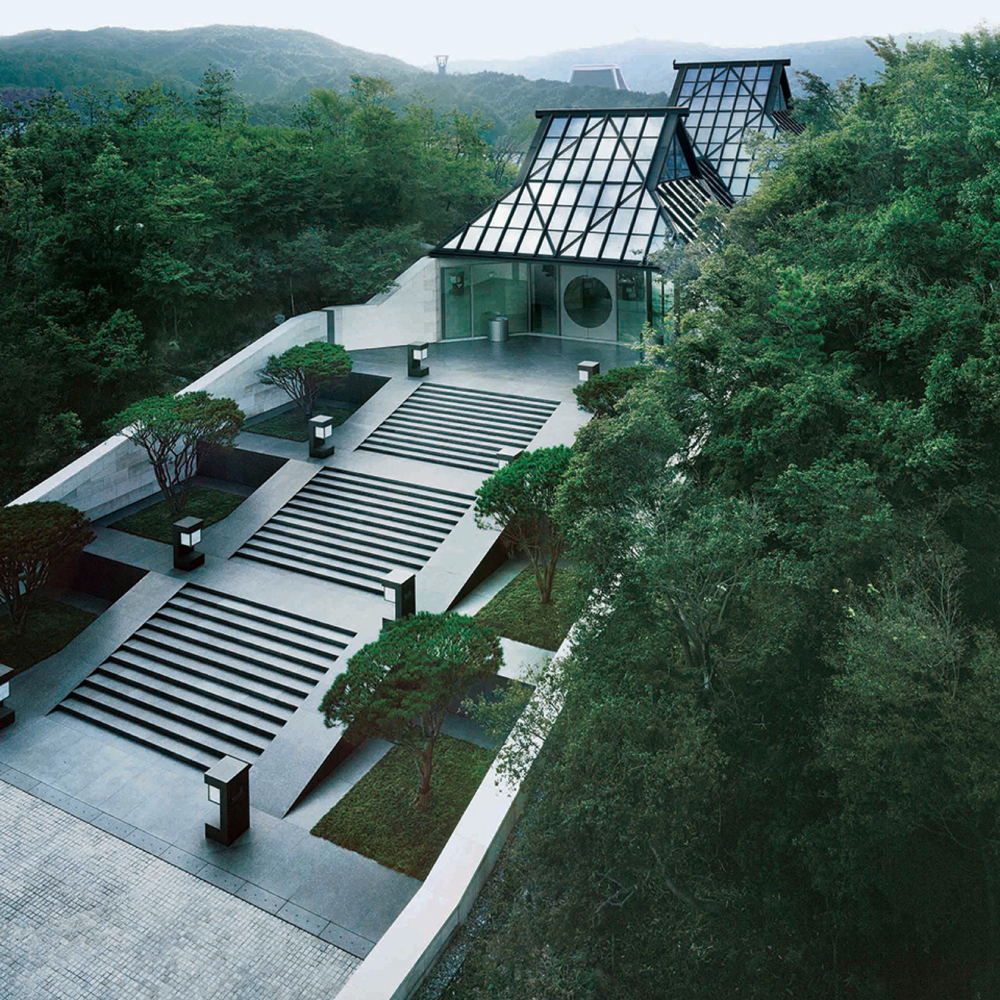
MIHO MUSEUM 美秀美術館
貝聿銘設計，藏身信樂山林間。以〈桃花源記〉為靈感，需穿過櫻花隧道與吊橋才抵達主館；80% 建築埋於地下，館藏橫跨古埃及、西亞到東亞古文明。
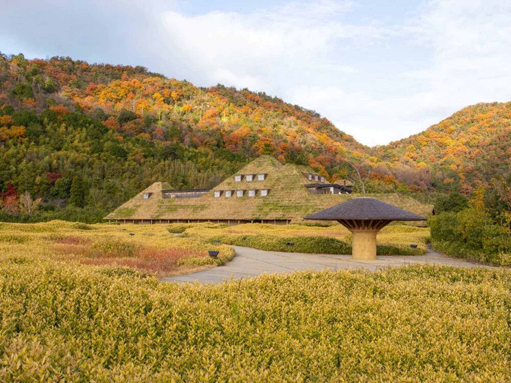
La Collina 近江八幡
和菓子品牌「たねや／CLUB HARIE」的旗艦園區，由建築師藤森照信設計，草屋頂建築融入田園自然；現場可買現烤年輪蛋糕，園區廣闊好拍。
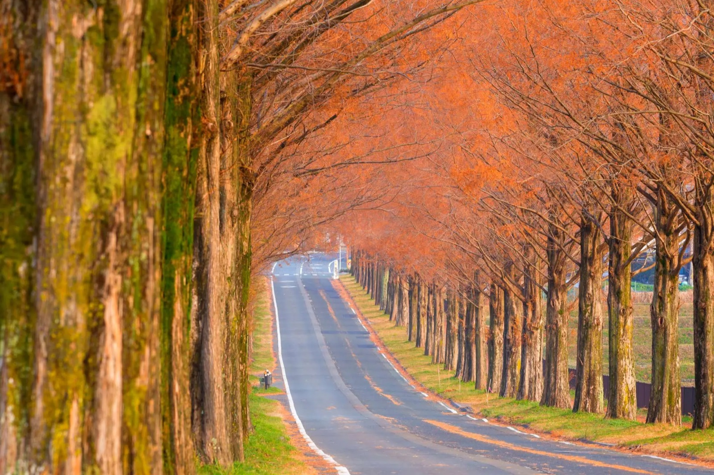
高島水杉並木大道
約 2.4 公里、500 餘棵水杉（メタセコイア）夾道的並木大道，秋末轉為紅褐、冬日可見雪景，是滋賀最具代表性的四季風景之一。
白鬚神社
近江最古老的神社，主祀猿田彥命，以佇立於琵琶湖中的紅色鳥居聞名，有「近江嚴島」之稱。清晨與黃昏時湖面倒映鳥居格外動人（面向湖側需橫越車道，注意來車）。